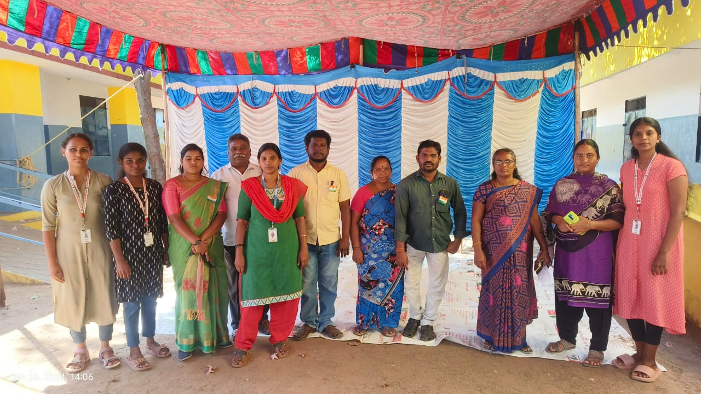

Organization
Sarvam Educational and Charitable Trust: Bridging Gaps, Transforming Lives
Founded in 2016 in Namakkal, this nonprofit tackles rural challenges like education, healthcare, women's empowerment, and environmental sustainability. Led by Chairperson Ramya S., it has become a driving force for positive change, improving lives across communities.